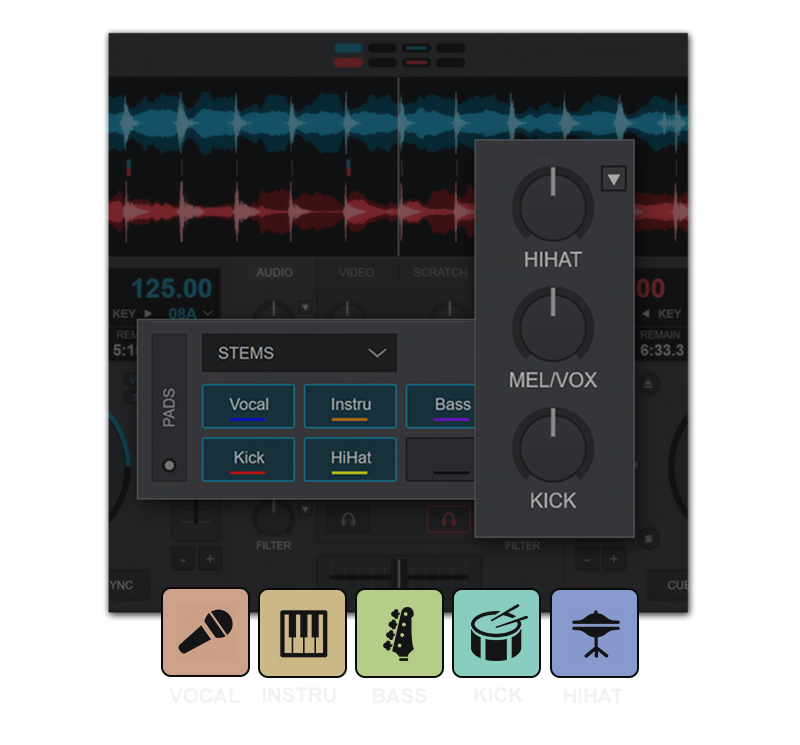
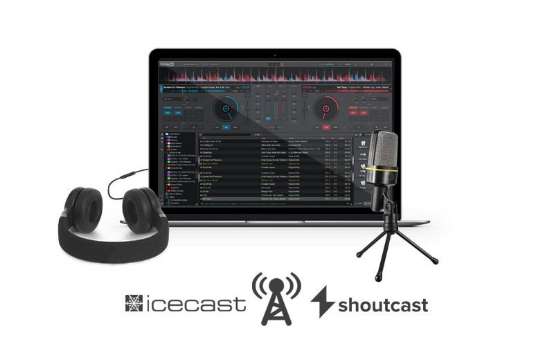
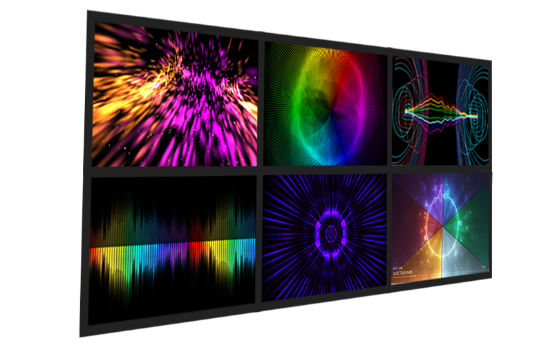
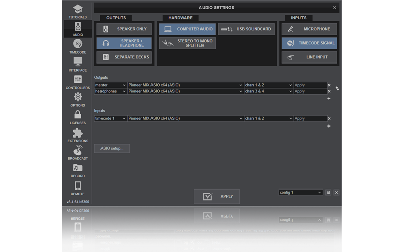
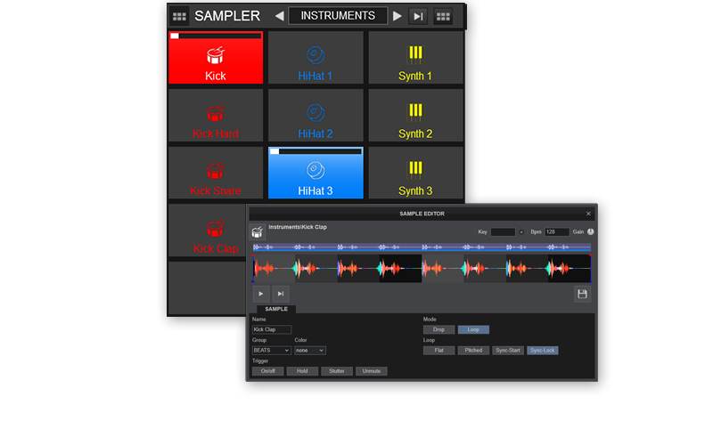
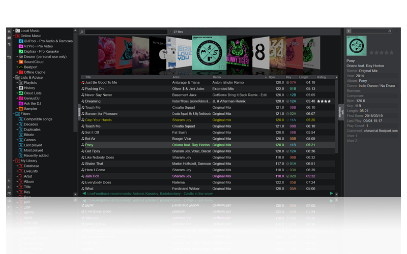
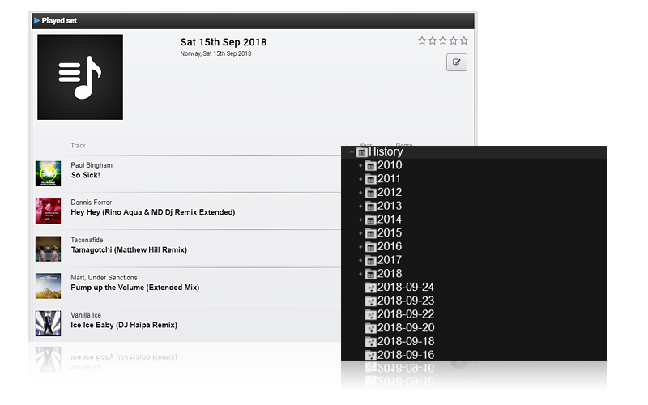
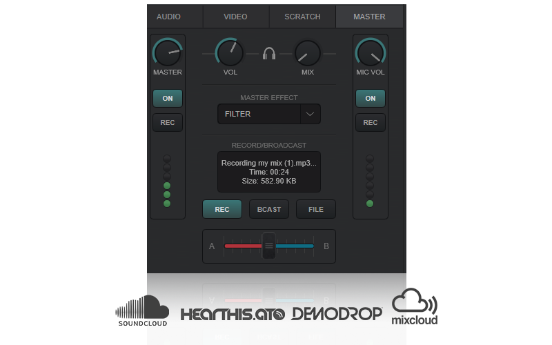

MAKE MUSIC NOT WAR


FEATURES
INDUSTRY LEADING FEATURE SET
VirtualDJ delivers more features than any other software. The latest groundbreaking
technology is always available in VirtualDJ first! With VirtualDJ you're guaranteed to be
ahead of the curve with the latest high-tech and innovative features
Although VirtualDJ is packed with features, it is still easy to learn. You can start with
the basics and advance as you learn more. VirtualDJ is well suited for both the amateur
starter, or the seasoned professional DJ and comes with all the features you'll ever need.
With VirtualDJ you can turn any event into a total success! Whether it's scratch performance
and video mixing, or from bedroom broadcast to upscale wedding events.
VirtualDJ lets you do more!. Unleash your creative potential...
Scroll down to learn more about some of the key features of VirtualDJ.

REAL-TIME STEMS SEPARATION
VirtualDJ 2023 uses advanced technology and the power of today's computers to instantly separate
any
song, during the mix, in real-time. Allowing DJs to adjust on the fly the components of their
tracks
(vocals, instruments, kicks, hi hats, etc) to create new mash-ups, remixes and transitions. This
opens the door to whole new ways of mixing that were simply not possible before, and will
forever
change the way DJs mix.
Although VirtualDJ is packed with <
VirtualDJ lets you do more!. Unleash your creative potential...
Scroll down to learn more about some of the key features of VirtualDJ.

Powerful, yet intuitive & easy to learn
Fully operational even without DJ hardware
Smart quantizing features for valuable mixing assistance
MULTI-DECK STAND-ALONE DJ MIXER
VirtualDJ is powerful, yet easy to use DJ software with an intuitive user-interface. Comes
with
all the the features you need to start mixing as a DJ. VirtualDJ is fully operational even
without DJ
hardware connected. With transport controls, jog wheels, track information, waveforms, an
advanced
mixer, equalization & filter, effects, loops, performance pads, hot cues, seamless looping,
smart
sync, and quantized cues all help you mix faster, better, and be more creative.
VirtualDJ comes with a plethora of key features that every entertainer needs in modern DJ
software:
FOR ANY TYPE OF DJ
VirtualDJ is by far the most utilized DJ software on the planet. Adaptable and suitable for any type of dj, from beginner to pro. From bedroom to main stage. Everyone starts with VirtualDJ!
POWERFUL, YET EASY TO USE
Offering the most intelligent DJ technology and intuitive features, VirtualDJ is still easy to learn and master for any aspiring DJ. And best of all it's free for non-professional use.
FOR ANY TYPE OF SETUP
Works with the most popular controllers and mixers on the market with plug & play auto detection and setup. With VirtualDJ the choice of hardware is all yours.
PLUG & PLAY WITH DJ GEAR
VirtualDJ works with more controllers and mixers than any other software. With plug & play
support
for over 300+ controllers, the choice of hardware is all yours! From easy-to-use entry level
controllers to advanced club mixers. Simply connect your controller and you are ready to
mix!
VirtualDJ supports all popular controllers from our partner brands, such as Pioneer DJ, Numark,
Reloop, Denon DJ, Hercules, Rane etc.
Furthermore, VirtualDJ comes with an intuitive mapper interface and midi-learn capability for
customization and tweaks, as well as creation of your own mappers. And with a powerful scripting
language, almost every facet of the software can be controlled and mapped.
With VirtualDJ you get the industry's best controller support and mapping features!

Built-in low latency, highly accurate DVS engine for mixing with traditional turntables and CD
players. Works with all major brands of timecode signal as well as VirtualDJ's own optimized DVS
signal that is available for download or purchase the specialty vinyl in our shop.
Works with all sound cards that have sufficient audio inputs and outputs, including plug and
play support for all popular DVS ready sound cards and controllers.
POWERFUL VIDEO MIXING
VirtualDJ comes with a powerful video engine for mixing all your video content. Works with all
leading video formats in high-quality resolutions with full-HD and 4K support with a plentitude
of available video effects, transitions, text-to-screen plugin, song titler, camera support,
screen-grabbing and fancy overlays - making your video mixing more creative than ever
Easy to use with on-screen previews and smart video-crossfade and transitions.
Integrates well with VirtualDJ video content catalog.

Add stunning visuals to your audio-only mixing
Thousands of visualisations available online
Beat-aware algorithm to adjust the visuals to music
STUNNING VISUALIZATIONS
Even if you are mixing only audio tracks, VirtualDJ will let you put those big screens and
projectors
to use. With thousand of available visualisations for a stunning on-screen presence. Psychedelic
patterns, tunnels, hypnotic ambients, equalizers and more.
Can be automatically enabled for audio-only tracks, with beat-aware algorithm and auto
rotation.
ENGAGING VIDEO GRAPHICS
Display beautiful graphics on screen with built-in videoskins ready for use on video walls or
projectors. Show what you are doing with the mix so your audience will feel like they are
standing in the booth with you. Entertain and engage them while you are mixing, with more than
just your sound. With action areas showing loops, effects, cues, current track and upcoming song
notifications, beat-tunnels that let the crowd see upcoming breaks, and more...
KARAOKE WITH NEXT SINGER LIST
Built-in support for karaoke playback with on-screen lyrics display. Play karaoke songs on each
deck or engage the powerful Karaoke Engine that allows you to add singer name, song key and
venue name - automatically saved for future recall. Options to show background graphics between
the karaoke songs, next singers on-screen display and more ...

HIGH-QUALITY SOUND
Professional grade high-end audio engine with crystal clear sound. Comes with built-in
high-quality pitch-stretching and master tempo, equalizers, filters, effects, and a limiter to
avoid clipping and distortion. Works with all entry level to professional grade sound cards with
high sample rate support.
Plug & play auto-detection for all popular DJ audio hardware and sound cards on the market, as
well as easy to use audio setup interface with tools for advanced audio routing.
AUDIO & VIDEO EFFECTS
VirtualDJ comes with built-in native audio & video effects with a plethora more available
including smart beat-aware effects, color-FX and all the standard audio effects like flanger,
filters, echo, beatgrid and more. Native video effects and transitions are also included along
with slideshows, visualizations, on-screen text and camera support. All easily extendable with
hundreds more available as free plugins.
Compatible with industry standard VST effects, and open SDK for creating your own
plugins.

Supports audio and video samples as well as still images for on-screen display. Comes with built-in, easy-to-use sampler editor (for editing samples the way you want them), sample recorder, transparency support and more.
Built-in stock samples included and plenty more can be added from the Extensions area including instrument packs, video loops etc.
POWERFUL SAMPLER
Powerful sampler with unlimited banks and sample slots that can also be grouped and organized with colors and icons and offering multiple playback modes (stutter, loop...).Supports audio and video samples as well as still images for on-screen display. Comes with built-in, easy-to-use sampler editor (for editing samples the way you want them), sample recorder, transparency support and more.
Built-in stock samples included and plenty more can be added from the Extensions area including instrument packs, video loops etc.
PERFORMANCE PADS
Up your performance with the performance pads! Unleash your creativity with an unlimited amount
of pads available, including loops, sampler, slicer, loop-rolls, hot cues, scratch pads and
more.
Comes with Pads Editor for easy customizations and creation of your own pad pages.

Powerful track management with smart folders
Fast search with scope parameters
Automatic tag reading with powerful tag editor
Expandable with folder and library plugins
LIBRARY MANAGEMENT
Powerful music library management for all your songs. With ultra fast searching, smart filter
folders, playlists and virtual folders for organizing all your tracks. Intuitive folder tree
structure for easy access to hard drives and folders, drag and drop reorder and nesting, grouped
folders by type and purpose.
With toolbar for quick select folders as favorites, create new smart-folders and playlist
folders.
SMART FOLDERS & PLAYLISTS
Organize and prepare your music with playlists and smart folders. Comes with stock native smart
folders and filters for duplicate song look up, compatible songs (key/bpm) to current played
song and more. Easy to use editor for creating even more smart filter folders that auto populate
by songs for given user set criteria and scope.
Intuitive playlist with drag and drop support for adding songs, as well as the ability to
nest and order them as you want. With quick select to use for automix playback or sidelist
'waitlist' for upcoming songs, wish-list etc.

SET-LISTS & TRACK HISTORY
Keep track of played songs with online list sharing. Track history logging with automatic
creation of history playlist available within the software; organized by date, year and month
folders. Support for online SetList of your favorite sets with social media integration.
Easily clone and convert to Cloudlists for access from any computer and for sharing with other
DJs and collaborations.
CLOUDLISTS & CHARTS
Access online charts and themed playlists, or share yours with the world! With Cloudlists you
can share your favorite playlists with other DJs, or keep them private and access your playlists
from other computers. With integration for sharing your best playlists to social media..
Subscribe and add themed playlists by other DJs or group of DJs. And access top played songs
feeds by DJs and popular charts from music services (BeatPort, iTunes...).
INTELLIGENT AUTOMIX
Smart automix engine for automatic playback of music from a playlist, with auto detection of
song structure and beats for best suitable mix transitions. Perfect for early hours background
music and for mobile DJs during dinner hours etc. With automix editor for custom transitions and
timing.
Display of total remaining time, auto removal of played songs, drag & drop and reorder songs
within the automix.
POWERFUL EDITORS
Create custom song edits, automate actions and much more! VirtualDJ comes with plenty of native
editors to tweak and improve your performance and tricks, make custom song edits, overlay lyrics
and graphics etc.
Use the Pads editor for custom creation of more performance pads, track editor for cleaning or
extending tracks, video editor with support for lyrics look-up, sample editor with audio and
video support, POI action point editor, BPM editor, automix editor and tag editor are all
included.
Integrates well with VirtualDJ video content catalog.
RADIO BROADCAST & PODCAST
Direct broadcast to internet radios & podcast to iTunes. With support for industry standard Shoutcast & Icecast protocols including automatic track title propagation, you can easily broadcast to webradios or create your own radio station. Additional support for direct PC-to-PC broadcast which allows your friends to connect directly to you as well as podcast streaming your mixes to VirtualDJ own servers with iTunes ready integration.
VIDEO BROADCAST TO SOCIAL MEDIA
Make the world your arena and broadcast your mixes to popular social platforms. With VirtualDJ its easy to broadcast video directly to many of the most popular sites. Add visualisations and Videoskins for cool graphics, camera overlay, real-time screen grab for live chats and more! VirtualDJ makes it easier and more fun than ever to look impressive and engage with your audience online.

High-quality audio and video recording
Share on popular mix sharing sites
Auto-track for CD production
RECORD YOUR MIXES
Share your mixtape! Built-in audio and video recording using the most popular formats and quality settings. With auto-start record on playback, support for external sources (record loopback, microphone etc ..). Upload to your favorite sites, share on popular platforms. With automatic split-to-tracks and export of track-title cue files supported in many CD burning software.
SANDBOX MODE
Never get surprised by a break again as you can prepare the upcoming mix ahead of time! The fully-featured sandbox mode lets you skip into future of the mix without interrupting the sound playing out to the audience. Automatically returns to the original software state and position on disengage so you can jump right back into the live mix. With visual indicator of master output playback position.
ONLINE CATALOGS
Get direct access to million of songs in high-quality formats from integrated online content
providers. A "Netflix for DJs" with instant access to extensive content catalogs for audio,
video and karaoke to complement your own music collection. Subscription based and seamless
integration in the software, with own folders and searching, as well as smart auto-search
results display if no local content matches your searche criteria.
Professional DJ content pools available with VirtualDJ Online Catalogs services (with offline
cache and playback availability), as well as support for Soundcloud and Deezer streaming.
LIVE SUGGESTIONS & GENIUS DJ
Get smart track suggestions based on what thousands of other DJ play next or drag-and-drop group
of songs to the GeniusDJ engine for quick track tips based on a selection of songs. With a live
ticker giving you song suggestions as you play, and tips from local content as well as supported
online catalogs.
Can also be set as an automatically updated docked sideview for extended use. Great for song
tips at hectic moments or on "brain freeze" to what to play next.
TAKE REQUESTS WITH ASK THE DJ
Direct song requests and messaging integrated within the software. With 'Ask The DJ' you can
receive requests and comments from your audience, with possibility for tipping and one-click to
look-up song requests automatically from local and online content. Auto geolocation detection of
nearest playing DJ and venue for quick requests for your guests. Support for upload of custom
song catalog to request from.
Free available web-app with custom branding and logo for guests to send requests from, with
support for tipping and custom url.
SCRATCH DNA
Automate scratch routines with ScratchDNA, expressed with transcription method using only a few letters. Create exciting scratches and apply them in the mix. Comes with stock scratch-pads to be used with any controller, including standard scratch techniques such as "baby scratch", "crib" and more. Easily create your own scratch sounds and routines, and visualize new sequences with the built-in DNA Scratch Editor.
DMX LIGHT CONTROL
Seamless communication over network protocol. Control DMX lights, scenes, fog machines and more directly from within VirtualDJ using your controller. Compatible with multiple popular DMX software supporting the OS2L protocol. Features automatic connection and detection using standard network protocols. Beat aware synchronization to have your lights move in sync with your music. Fully programmable and extendable.
CUSTOM INTERFACES
Make VirtualDJ look and feel exactly how you want. With skin support you can completely change
the look and feel of the software easily or choose from hundreds of skins available from the
in-app extensions area. Choose between interfaces that mimic popular DJ hardware or use special
purpose skins to suit your needs.
Open SDK for easily create own skin and brand your own skins.
EXTENSIVE CONFIGURATIONS
Customize and tweak the software to your own liking. With VirtualDJ you get powerful access to
software features that you can customize to behave the way you want. Additionally VirtualDJ
comes with a huge selection of easy to add extensions, interfaces, addons, and plugins as well
as powerful mapper integration to customize keyboard shortcuts and controller any way you
want.
With VirtualDJ, all the powers are in your hands ...
REMOTE CONTROL WITH PHONE/TABLET
Wireless remote control from Android and iOS with a dedicated app for both tablets and phones. Unlimited custom interfaces available; from extra trigger pads and effect units, to a full scale controller. Plug and play discovery over a local network, with or without internet. A popular tool for mobile DJs allowing them to interact with the guests away from the DJ setup.
LINK, LINE-IN & REWIRE
Collaborate with other DJs using network protocols With seamless integration of Ableton Link &
ReWire you can remote control digital audio production suites and playback the sound directly
through VirtualDJ all in sync across applications. Jam with other DJs and musicians on multiple
software platforms and computers.
VirtualDJ also supports live line-in inputs with live BPM reading and waveform output for beat
mixing to live sources.